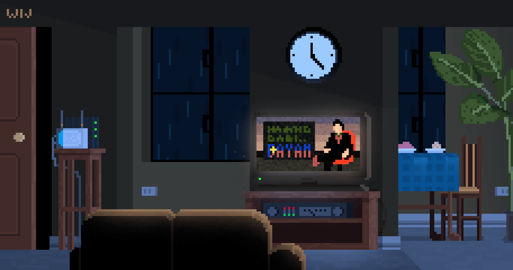

<div class="mission">
  
    <div class="container">
        
        <div class="text2">
            <div class="details"><br><br>Vous venez de finir de regarder votre film. <br><br>
                Mais vous savez que vous utiliserez encore votre télévision ou votre ordinateur
                d'ici moins de 2h.<br><br> Quelle la meilleure attitude : <br><br>
                - Eteindre la télévision/ordinateur puis le rallumer lorsque vous en aurez besoin. <br><br>
                - Laisser la télévision/ordinateur en mode veille.
            </div>
        </div>
        <div class="answers">
            <a>
                <p class="answer one" (click)="reward(20, 20)">Eteindre</p>
            </a>
            <a>
                <p class="answer two" (click)="reward(0, -20)">Mode veille</p>
            </a>
        </div>
    </div>
    <div class="modal" id="modal">
        <div class="box">
            <div class="text">
                <h1>Information</h1>
                Le mode veille des écrands consomme énormément et les laisser allumés aussi. <br>
                Il vaut donc mieux éteindre l'appareil puis le rallumer lorsqu'on on a besoin.
            </div>
            <a [routerLink]="['']" routerLinkActive="active" >
                <p class="btn-next2">Home</p>
            </a>
        </div>
    </div>
</div>
